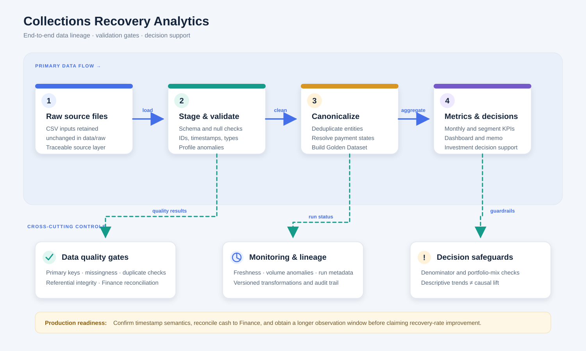

✓
Quality gates
Primary-key uniqueness, null checks, referential integrity, duplicate detection and Finance reconciliation.
Visual data lineage from immutable source files to canonical records, metrics, quality controls and executive decision support.
Immutable source drops retained for traceability.
Schema checks, load metadata and timestamp review.
Deduplication, types, IDs and payment-state rules.
Versioned metrics, freshness indicators and decision views.
Primary-key uniqueness, null checks, referential integrity, duplicate detection and Finance reconciliation.
Freshness and volume anomaly alerts, late-arriving event handling and controlled backfills.
Version metric definitions, log changes and alert on denominator shifts or abrupt portfolio-mix changes.
Follow the directional arrows from raw inputs through validation and canonicalization into metrics and decision views. Dashed teal arrows show quality and monitoring feedback.

Open SVG full size ↗